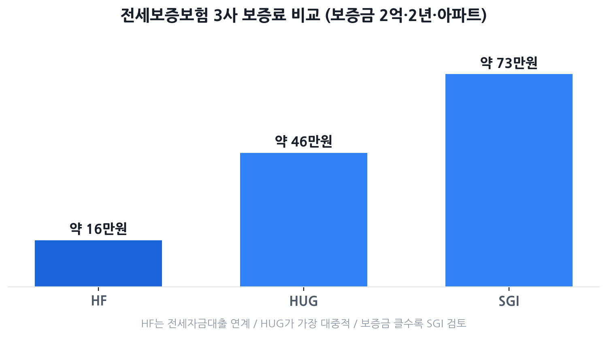

전세보증보험 HUG·HF·SGI 3사 비교 2026
— 보증료·한도·가입 조건·함정 총정리
전세사기 공포가 계속되는 2026년, 전세보증보험은 이제 선택이 아닌 사실상 필수입니다. 그런데 막상 알아보면 기관이 세 곳(HUG·HF·SGI)이고 보증료도 다르고 한도도 다릅니다. "어디가 싸고, 어디가 가입이 쉬운지"를 2026년 최신 수치로 정리했습니다. 내 집이 가입 거절될 수 있는 집인지도 함께 확인하세요.
- 전세 계약을 앞두고 전세보증보험을 처음 알아보는 분
- HUG·HF·SGI 중 어디서 가입해야 할지 모르는 분
- "보증료가 얼마나 드는지" 실제 금액이 궁금한 분
- 가입 거절 이유와 전세사기 예방 체크를 한 번에 알고 싶은 분

전세보증보험이란 — 왜 꼭 필요한가
전세보증금반환보증(전세보증보험)은 계약이 끝났는데도 집주인이 보증금을 돌려주지 않을 때, 보증기관이 세입자에게 먼저 보증금을 지급하고 나중에 집주인에게 받아내는 제도입니다.
핵심 구조는 간단합니다. 세입자가 소액의 보증료(연 0.02~0.26% 수준)를 내고 가입하면, 집주인이 파산하거나 전세사기를 치더라도 보증기관으로부터 보증금 전액을 돌려받을 수 있습니다.
HUG·HF·SGI 3사 핵심 비교표
세 기관의 성격은 각기 다릅니다. HUG(주택도시보증공사)는 국토교통부 산하 공공기관으로 가장 대중적, HF(한국주택금융공사)는 전세자금대출과 연계된 구조로 보증료가 가장 낮음, SGI(서울보증보험)는 민간 보증보험사로 보증금 한도가 가장 유연합니다.
| 구분 | HUG 주택도시보증공사 |
HF 한국주택금융공사 |
SGI 서울보증보험 |
|---|---|---|---|
| 상품명 | 전세보증금반환보증 | 전세지킴보증 (일반전세지킴보증) |
전세금보장신용보험 |
| 기관 성격 | 공공(국토부 산하) | 공공(금융위 산하) | 민간 보증보험사 |
| 보증료율 (연, 기준) |
아파트 약 0.115% 비아파트 약 0.146% (주택유형·부채비율별 차등) |
LTV 70% 이하 0.04% LTV 70~80% 0.11% LTV 80% 초과 0.18% 우대 시 최저 0.02% |
아파트 0.138~0.183% 기타주택 0.208% (LTV·신용도별 차등) |
| 보증금 한도 | 수도권 7억 원 이하 비수도권 5억 원 이하 |
상품·은행별 상이 (주택가격×90%−선순위채권) |
아파트 한도 없음 비아파트 10억 원 이하 |
| 담보인정비율 | (전세금+선순위채권) ≤ 주택가격×90% |
LTV 구간별 차등 (통상 90% 이내) |
약 90% 수준 (자체 기준 운영) |
| 집주인 동의 | 불필요 (가입 후 통보) | 불필요 | 불필요 |
| 주요 가입 조건 | 전입신고+확정일자 실거주·공인중개 계약 계약기간 1년 이상 |
전세자금대출 연계 소득·신용 요건 충족 전입신고+확정일자 |
전입신고+확정일자 실거주 계약기간 1년 이상 |
| 가입 기한 | 계약 기간 1/2 경과 전 (2년 계약 → 1년 이내) |
대출 실행 전후 (은행별 상이) |
계약 기간 1/2 경과 전 |
| 신청 방법 | HUG 앱·위탁은행 지사·안심전세 포털 |
은행 창구·앱 (HF 연계 은행) |
SGI 앱·홈페이지 위탁 금융사 |
| 이런 분께 추천 | 대출 없는 일반 전세 신혼부부·다자녀 할인 활용 |
전세자금대출 받는 분 보증료를 최소화하고 싶은 분 |
보증금 7억 초과 HUG에서 거절된 경우 |
보증료 실제 계산 — 보증금 2억 기준 얼마?
보증료 계산 공식은 세 기관 모두 동일합니다.
보증금 2억 원, 2년(730일) 계약, 아파트를 기준으로 3사를 비교하면 아래와 같습니다.
| 기관 | 적용 보증료율 | 2년 총 보증료 | 월 환산 |
|---|---|---|---|
| HUG | 연 0.115% (아파트, 부채비율 80% 이하) | 약 46만 원 | 약 1만 9천 원 |
| HF | 연 0.04% (LTV 70% 이하 기준) | 약 16만 원 | 약 6,600원 |
| SGI | 연 0.183% (아파트 상한 기준) | 약 73만 원 | 약 3만 원 |
HF가 단연 저렴하지만 앞서 설명한 대로 전세자금대출 연계 구조입니다. HUG의 경우 사회배려계층(저소득·다자녀·장애인 등)은 최대 60% 할인, 모바일 앱 신청 시 3% 추가 할인을 받을 수 있습니다. SGI는 LTV가 낮을수록 할인폭이 커집니다.
가입 거절되는 집의 특징 (함정 7가지)
전세보증보험 가입이 거절되는 데는 이유가 있습니다. 아래 7가지 중 하나라도 해당하면 계약 전에 반드시 확인해야 합니다.
① 공시가격 126% 초과 — 깡통전세의 기준선
HUG는 전세보증금이 주택 공시가격의 126%를 초과하면 보증 가입이 불가능합니다. 예를 들어 공시가격 2억 원짜리 빌라라면 전세금이 2억 5,200만 원(2억×1.26)을 넘으면 거절됩니다. HF도 2025년 8월 이후 같은 기준을 적용 중이며, 2026년 들어 담보인정비율을 90%→80%로 낮추는 방안이 논의되고 있습니다(확정 시 공시가격의 약 112%까지만 가능).
② 선순위채권이 집값의 60% 초과
집에 기존 대출(근저당)이 많으면 거절됩니다. HUG 기준, 선순위 근저당 등 채권이 주택 가격의 60%를 넘으면 가입이 제한됩니다. 등기부등본 을구의 근저당 설정금액과 집값을 비교해 확인하세요.
③ (전세금 + 선순위채권)이 집값의 90% 초과
담보인정비율 기준입니다. 전세금 3억에 기존 근저당 1억이 설정된 집이라면, 집값이 최소 4억 4,400만 원(4억 ÷ 0.9) 이상이어야 합니다. 이 계산이 맞지 않으면 세 기관 모두 가입이 어렵습니다.
④ 등기부에 권리침해 기재 — 경매·압류·가압류
등기부등본 갑구에 경매신청, 압류, 가압류, 가처분, 가등기 등이 있으면 세 기관 모두 거절합니다. 계약 직전과 잔금 지급 당일 등기부를 다시 열람해 확인해야 합니다.
⑤ 위반건축물 표기
건축물대장에 '위반건축물'로 표기된 건물(아파트 제외)은 HUG 가입이 불가합니다. 계약 전 건축물대장을 정부24에서 열람해 확인하세요.
⑥ 다가구 주택의 선순위 세입자 문제
다가구 주택에는 같은 건물에 여러 세입자가 있고, 선순위 세입자들의 보증금이 모두 '선순위채권'으로 합산됩니다. 집주인이 이 내역을 숨기는 전세사기 사례가 많습니다. 전입세대열람내역서를 발급받아 타 세대 전입 현황을 반드시 확인하세요.
⑦ 집주인 소유가 아닌 대지·토지
건물과 토지(대지권)의 소유자가 다른 경우, 지상권이 설정된 경우 등은 담보가치가 불안정해 거절될 수 있습니다. 등기부등본에서 토지와 건물의 소유자 일치 여부를 확인하세요.
신청 시점·방법·필요 서류
가장 중요한 원칙: 계약 기간의 절반이 지나기 전에 가입해야 합니다. 2년 계약이라면 입주 후 12개월 이내, 1년 계약이라면 6개월 이내입니다. 이 기한을 놓치면 해당 계약 기간에는 가입이 불가능합니다.
신청 흐름 (HUG 기준)
- 전세계약 체결 — 잔금 지급일에 전입신고 완료 + 확정일자 취득
- 서류 준비 — 임대차계약서(확정일자 날인), 주민등록등본, 등기부등본, 건축물대장, 전입세대열람내역서
- 신청 — HUG 안심전세 앱·홈페이지, 위탁 은행(KB·신한·우리 등), HUG 지사 중 선택
- 심사 및 보증료 납부 — 보증기관이 담보가치·선순위채권·주택상태 심사 → 승인 시 보증료 납부
- 보증서 발급 — 계약 기간 내 내 보증금을 지켜주는 보증서 수령
전세사기 예방 4단계 체크리스트
전세보증보험 가입과 함께, 계약 전·후로 아래 4단계를 빠짐없이 실행하면 전세사기 피해 가능성을 크게 줄일 수 있습니다.
1단계 — 계약 전 등기부등본 확인
- 갑구: 소유권 이전 이력, 경매·압류·가압류·가처분·가등기 없는지 확인
- 을구: 근저당 설정 금액 합산 → 집값의 60% 이내인지 확인
- 집주인이 진짜 소유자인지 신분증과 등기부 대조
2단계 — 잔금 당일 전입신고 + 확정일자
- 잔금을 낸 당일 주민센터에서 전입신고 + 확정일자 취득 (하루라도 늦으면 순위가 밀림)
- 전입신고 전에 다른 채권이 설정될 수 있으므로, 잔금 당일 등기부를 한 번 더 열람
3단계 — 전세보증보험 가입 (계약 기간 1/2 전)
- 입주 직후 HUG·HF·SGI 중 본인에게 맞는 기관 선택 후 신청
- 가입 거절 시 원인 파악 → 거절 사유가 집 자체 문제라면 계약 재검토
4단계 — 계약 만료 전 재확인
- 만기 2~3개월 전 등기부 재열람 → 경매·압류 여부 확인
- 집주인에게 만기 2개월 전 보증금 반환 의사 서면 확인
- 반환 거절 또는 지연 시 계약 만료 후 1개월 이내 보증기관에 보증 이행 청구
자주 묻는 질문
Q. 전세보증보험, 꼭 들어야 하나요?
법적 의무는 아니지만 사실상 필수입니다. 집주인이 보증금을 반환하지 못할 경우 보증기관이 대신 지급한 뒤 집주인에게 구상권을 청구하는 구조라, 세입자 입장에서 가장 확실한 안전망입니다. 연간 보증료가 보증금 2억 원 기준 20~30만 원 수준임을 감안하면 비용 대비 효과가 큽니다.
Q. HUG·HF·SGI 중 어디가 가장 저렴한가요?
보증료율만 놓으면 HF(전세지킴보증)가 연 0.02~0.04%로 가장 낮습니다. 다만 HF는 전세자금대출과 연계된 상품 성격이 강해, 대출 없이 순수 반환보증만 원할 때는 HUG를 먼저 검토하는 것이 일반적입니다.
Q. 집주인 동의가 없어도 가입할 수 있나요?
네. 2018년 2월 이후 집주인 동의 의무가 폐지되었습니다. 가입 후 보증기관이 집주인에게 등기우편으로 통보하는 방식으로 바뀌었습니다. 집주인이 반대해도 세입자가 단독으로 가입할 수 있습니다.
Q. 언제까지 가입해야 하나요?
계약 기간의 절반이 지나기 전에 신청해야 합니다. 2년(24개월) 계약이라면 12개월이 지나기 전, 즉 입주 후 1년 이내에 가입해야 합니다. 이 기한을 놓치면 해당 계약 기간에는 가입이 불가능합니다.
Q. 전세보증보험에 가입이 거절됐어요. 어떻게 하나요?
거절 사유를 먼저 확인하세요. 선순위채권 과다나 공시가격 126% 초과처럼 주택 자체의 문제라면, HUG에서 거절돼도 SGI에서 승인되는 경우가 있습니다(단, 2024~2026년 사이 두 기관의 기준 차이가 과거보다 좁혀지는 추세입니다). 위반건축물이나 권리침해(경매·압류) 사유라면 세 기관 모두 거절됩니다. 가입이 불가한 집이라면 계약 자체를 재검토하는 편이 안전합니다.
본 글은 HUG(주택도시보증공사, khug.or.kr), HF(한국주택금융공사, hf.go.kr), SGI서울보증(sgic.co.kr), 집품(zippoom.com, 2026.03.16), info.yiwi.co.kr(2026.03.20) 등 공개 자료를 바탕으로 2026년 6월 기준 작성됐습니다. 보증료율·보증 한도·가입 조건 등 세부 기준은 기관별 고시 변경에 따라 달라질 수 있으니, 가입 전 반드시 각 기관 공식 채널에서 최신 내용을 확인하시기 바랍니다. 본 페이지는 정보 제공 목적이며 특정 상품 가입을 권유하거나 보증금 반환을 보장하지 않습니다.